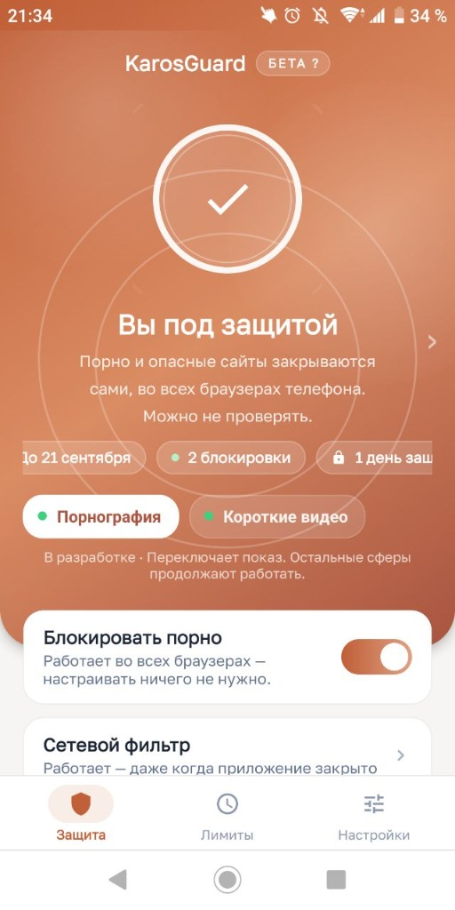
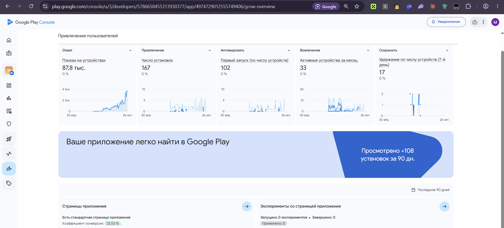

01 — Собственное приложение
KarosGuard
Android & Windows
Моё приложение для блокировки нежелательных сайтов и контроля времени в телефоне и на ПК. Сделал с нуля: от интерфейса и логики работы до публикации Android-версии в Google Play.
- Прошёл закрытое тестирование и модерацию магазина.
- Перевёл приложение и его страницу на 28 языков.
- Собираю обратную связь, разбираюсь в ошибках и выпускаю обновления.

У приложения есть живые пользователи
Google Play Console · снимок на 26 октября 2026
87,8 тыс.
показов на устройствах
167
установок
102
первых запусков на устройствах
33
активных устройства за месяц
Посмотреть статистику из Google Play Console

Период на графиках: 30 апреля — 26 октября. Это сохранённый снимок статистики, а не счётчик в реальном времени.
Открыть оригинал ↗